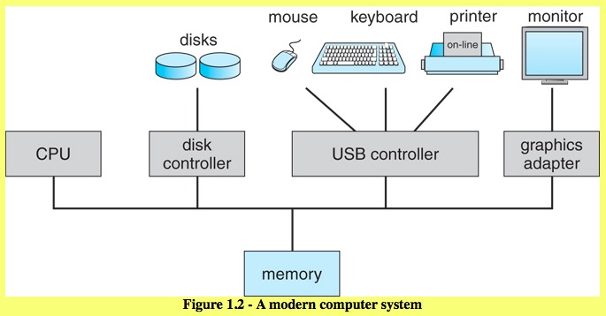
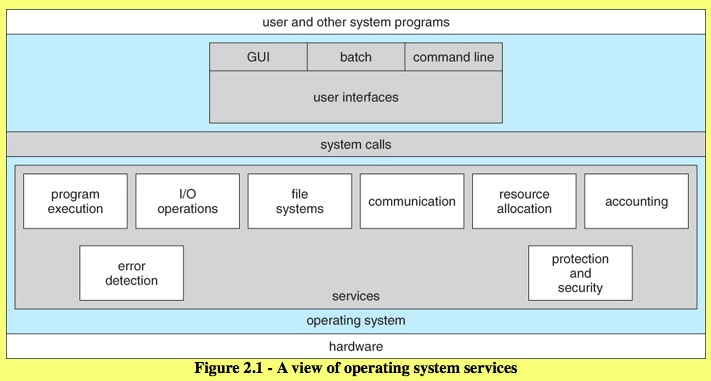

CS 5129 Operating System
Rui Dai
Chap 1. Introduction to OS
1.1 What Operating Systems Do --- For Users and Applications
- Computer = HW + OS + Apps + Users
- OS serves as interface between HW and ( Apps & Users )
1.2 Computer-System Organization - What are all the parts, and how do they fit together?

1.2.1 Computer-System Operation
- Shared Memory between CPU and I/O cards
- Time slicing for multi-process operation
- Interapt handling
1.2.2 Storage Structure
- Main Memory RAM (Random-Access Memory)
- Other electronic memory is faster, smaller, and more expensive per bit
- Non volatile memory
1.2.3 I/O Structure
Typical operation involves I/O requests, direct memory access ( DMA ), and interrupt handling.
1.3 Computer-System Architecture - Different Operating Systems for Different Kinds of Computer Environments
- Single-Processor Systems
- Multiprocessor Systems
- Clustered Systems
Independent systems, with shared common storage and connected by a high-speed LAN, working together.
1.4 Operating-System Structure
A time-sharing ( multi-user multi-tasking ) OS requires:
- Memory management
- Keeping track of which blocks of memory are currently in use, and by which processes.
- Determining which blocks of code and data to move into and out of memory, and when.
- Allocating and deallocating memory as needed.
- Process management
- Creating and deleting both user and system processes
- Ensuring that each process receives its necessary resources, without interfering with other processes.
- Suspending and resuming processes
- Process synchronization and communication
- Deadlock handling
- Job scheduling
- Resource allocation strategies
- Swap space / virtual memory in physical memory
- Interrupt handling
- File system management
- Protection and security
- Inter-process communications
Chap 2 Operating-System Structures
2.1 Operating-System Services

One set of operating system services provides functions that are helpful to the user.
- UI user interface
- CLI command line interface
uses text commands and a method for entering them
- Batch interface
commands and directives to control those commands are entered into files, and those files are executed
- GUI graphical user interface
- Program execution
- I/O operations
- File-System manipulation
Programs need to read, write, create, delete and search file and directories.
- Communications
One process needs to exchange information with another process.
- shared memory
two or more processes read and write to a shared section of memory
- message passing
packets of information in predefined formats are moved between processes by the operating system.
- Errordetection
Another set of operating system functions exist for ensuring the efficient operation of the system itself.
- Resource allocation
- Accounting
keep track of which users use how much and what kinds of computer resources.
- users can be billed
- accumulating usage statistics
Usage statistics may be a valuable tool for researchers who wish to reconfigure the system to improve computing services.
- Protection and security
2.2 User and Operating System Interface
Two fundamental approaches to interface with the OS.
- Command Interpreters (Command-line interface)
- Command Interpreters, allows users to directly enter commands to be performed by the operating system.
- On systems with multiple command interpreters to choose from, the interpreters are known as shells.
On systems with multiple command interpreters to choose from, the interpreters are known as shells.
- Graphical User Interface
2.3 System Calls
It provide a means for user or application programs to call upon the services of the operating system.
- Frequently, systems execute thousands of system calls per second.
- application developers design programs according to an (API) application programming interface. The functions that make up an API typically invoke the actual system calls on behalf of the application programmer.
- Windows API for Windows systems
- POSIX API for POSIX-based systems (which include virtually all versions of UNIX, Linux, and Mac OS X)
- Java API for programs that run on the Java virtual machine.
2.4 Types of System Calls
System calls can be grouped roughly into six major categories:
- Process control
- MS-DOS --- single-tasking system
This system uses a simple method to run a program and does not create a new process. It loads the program into memory, writing over most of itself to give the program as much memory as possible.
- FreeBSD --- multitasking system
Command interpreter may continue running while another program is executed.
- File manipulation
- Device manipulation
Devices are various resources controlled by the operating system. Include physical and abstract or virtual devices (files).
- Main Memory
- Disk drives
- Access to files
- Information maintenance
- Many system calls exist simply for the purpose of transfering information between the user program and the OS.
- Another set of system calls is helpful in debugging a program
- Communication
Two common models of interprocess communication:
- message-passing model
the communicating processes exchange messages directly or indirectly, with one another, throught a mailbox to transfer information.
- shared-memory model
processes use system calls to create and gain access to regions of memory owned by other processes.
- Protection
It provides a mechanism for controlling access to the resources provided by a computer system.
2.5 System Programs (system utilities)
Another aspect of a modern system is its collection of system programs. They provide a convenient environment for program development and execution.
2.6 Operating-System Design and Implementation
- Design Goals
- Mechanisms and Policies
- Implementation
2.7 Operating-System Structure
- Simple Structure
Many operating systems do not have well-defined structures.
- MS-DOS
the interfaces and levels of functionality are not well separated.
- original UNIX OS
an enormous amount of functionality to be combined into one level. This monolithic structure was difficult to implement and maintain.
- Layered Approach
With proper hardware support, operating systems can be broken into pieces that are smaller and more appropriate than those allowed by the original MS-DOS and UNIX systems.
A system can be made modular in many ways. One method is the layered approach, in which the operating system is broken into a number of layers (levels).
- An operating-system layer is an implementation of an abstract object made up of data and the operations that can manipulate those data. Lower-level layers can be invoked by higher-level layers.
- The main advantage of the layered approach is simplicity of construction and debugging. The layers are selected so that each uses functions (operations) and services of only lower-level layers.
- Each layer is implemented only with operations provided by lower-level layers. A layer does not need to know how these operations are implemented; it needs to know only what these operations do. Hence, each layer hides the existence of certain data structures, operations, and hardware from higher-level layers.
- Major difficulty with layered approach: defining the various layers
- A final problem: it tend to be less efficient than other layers. Now, few layers with more functionality are being designed.
- Microkernels
As UNIX expanded, the kernel became large and difficult to manage. CMU developed an OS called Mach that modularized the kernel using the microkernel approach.
- This method structures the operating system by removing all nonessential components from the kernel and implementing them as system and user-level programs. The result is a smaller kernel.
- microkernels provide minimal process and memory management, in addition to a communication facility.
- The main function of the microkernel is to provide communication between the client program and the various services that are also running in user space. Communication is provided through message passing.
- Mac OS X kernel (also known as Darwin) is also partly based on the Mach microkernel.
- Performance of microkernels can suffer due to increased system-function overhead.
- Modules
- The best current methodology for OS design involves loadable kernel modules.
- The idea of the design is for the kernel to provide core services while other services are implemented dynamically, as the kernel is running.
- Hybrid System
In practice, very few operating systems adopt a single, strictly defined structure. Instead, they combine different structures, resulting in hybrid systems that address performance, security, and usability issues.
- Mac OS X
The Cocoa environment specifies an API for the Objective-C programming language, which is used for writing Mac OS X applications.
- iOS
Structured on the Mac OS X.
- Android
- At the bottom of this software stack is the Linux kernel, although it has been modified by Google
- Software designers for Android devices develop applications in the Java language. However, rather than using the standard Java API, Google has designed a separate Android API for Java development.
2.8 Operating-System Debugging
- Failure Analysis
- Performance Tuning
- DTrace
2.9 Operating-System Generation
system generation SYSGEN.
2.10 System Boot
- booting the system: The procedure of starting a computer by loading the kernel
- bootstrap program or bootstrap loader locates the kernel, loads it into main memory, and starts its execution.
2.11 Summary
Chap 3. Processe
- Process: a program in execution.
- A process is the unit of work in a modern time-sharing system.
- A system therefore consists of a collection of processes: operating- system processes executing system code and user processes executing user code.
- By switching the CPU between processes, the operating system can make the computer more productive.
3.1 Process Concept
3.2 Process Scheduling
- The objective of multiprogramming is to have some process running at all times, to maximize CPU utilization.
- The objective of time sharing is to switch the CPU among processes so frequently that users can interact with each program while it is running.
在鸡场的妈妈已经老了。
看到她拖着脚步在屋里，屋子里、院子里低着头忙东忙西。
她是个多么勤劳的妈妈，一刻也停不下来。
每次看到她拖着她的步子，鼻子就酸。她把这么多年的心血洒在了我们身上，家里的每寸空间里，而岁月给了她什么，但是她还是如此的不知疲惫的为家付出着。
记得很清楚，在小时候，我们四个出去忙一天，晚上回来后谁都不想动，除了她。尽管年幼的我们不懂事，各种诉说我们的饿与累，她却能精神抖擞的自动钻进厨房，不一会儿，凝聚着她的创造力，总是出乎想象的晚餐就出来了。她是神奇的妈妈，极具创造精神的母亲。
不知道你有没有注意到。在鸡场时，她总是微驼着背，拖着小碎步，很经常的会忘记早上洗脸，总是忘东西。我是有多少次那么的担心她那么聪明的大脑会被鸡场拖累的慢慢老去，变成她的父亲，忘记我们。所以，这次买的ipad，就是想让她多玩游戏。而我发现，鸡场的琐事，让她根本没时间去用ipad。而这次我到家，就是为了改变他们的生活习惯，希望能起到作用。
前天去新区三儿的订婚酒店之前，妈妈说，她要洗个头。一洗完头，换完衣服，挖！ 神采飞扬，顿时比平日里的年轻了真的不止10岁，
妈，在她更年轻时，绝对是个大美女。
就在那一刻，我的心突然像秋天干爽极了的湛蓝的天。原来，妈妈没有老，只是鸡场在拖累她，拖累她的精神，拖累她的思维。
时光啊时光，你慢些走。我爱我的妈妈。
咱们在鸡场，只是衣服换成了脏衣服，但是心情还是很好很年轻。而妈妈在鸡场换完衣服，真的真的神情都老了。
我不知道，妈妈会被鸡场里的琐碎事，拖到什么情形，但我深知，我们的江康，伟大，富有创造力的妈妈现在的渴望。她是个渴望积极发展，渴望不断有新鲜事物出现的伟大女性。
Chap 8. Main Memory
The difference between the compile time address binding and execution time (run time) address binding.
The difference between load-time and run-time binding is that in run-time every time there is a memory lookup it goes through a "relocation register" which is like the base register and then you add an offset.
In load-time binding it does the same thing but subsequent lookups don't require evaluation of this register. The addresses are set when it is first pulled into memory. Hence if the base address changes you need to re-load the whole process to fix up all the relocatable addresses.
In the case of run-time, you can move the process around in physical memory and not need to worry about re-loading it to fix the mapping up because every time there is an access to memory it maps it then.
Load-time binding results in matching logical/physical addresses but run-time results in differing logical/physical addresses.
Does the swapped out process need to swap back in to same physical addresses?
compile-time or load-time address binding, swapped back into the same memory location.
execution time binding, swapped back into any available location.
8.3 Contiguous Memory Allocation
- Memory Protection
protection against user programs accessing areas that they should not
- Memory Allocation
strategies for finding the "best" allocation of memory to processes, First fit, Best fit, Worst fit
- Fragmentation
external fragmentation & Internal fragmentation
To deal with fragmentation:
- compaction
If the programs in memory are relocatable, ( using execution-time address binding ), then the external fragmentation problem can be reduced via compaction, i.e. moving all processes down to one end of physical memory. This only involves updating the relocation register for each process, as all internal work is done using logical addresses.
- Segmentation
Another solution is allow processes to use non-contiguous blocks of physical memory, with a separate relocation register for each block.
8.4 Memory Segmentation
- Basic Method (Programmer's view of a program.)
We think of memory in multiple segments, each dedicated to a particular use, such as code, data, the stack, the heap, etc. Memory segmentation supports this view by providing
(segment number ( mapped to a segment base address ) , offset from the beginning of that segment.)

Segmentation permits the physical address space of a process to be non-contiguous. Paging is another memory-management scheme that offer these advantage. And more, avoid external fragmentation. Now, the logical address space is totally separated from the physical space. So, a process can have a address space even larger than the physical memory.
8.5 Paging
Paging: eliminates most of the problems of the other methods discussed previously, and is the predominant memory management technique used today. Paging is a memory management scheme that allows processes physical memory to be discontinuous, and which eliminates problems with fragmentation by allocating memory in equal sized blocks known as pages.
8.5.1 Basic Method (pages --- frames)
divide physical memory into a number of equal sized blocks called frames, divide a programs logical memory space into blocks of the same size called pages.

Page lookups must be done for every memory reference, and whenever a process gets swapped in or out of the CPU, its page table must be swapped in and out too, along with the instruction registers, etc.
8.5.2 Hardware Support (TLB)
- One option is to use a set of registers for the page table.
- An alternate option is to store the page table in main memory, and to use a single register ( PTBR, the page-table base register) to record where in memory the page table is located.
- The problem with this approach is the time required to access a user memory location: Two memory accesses needed to access a byte (1. page table entry; 2. byte). Memory access is slowed by a factor of 2.
- Solution: use a special high speed memory device, (TLBs)
(TLBs) Translation look-aside buffers, also called
associative memory, is a fast-lookup hardware cache.
- Effective Memory-access time
8.5.3 Memory Protection
- valid/invalid bits
Valid / invalid bits can be added to "mask off" entries in the page table that are not in use by the current process

- (PTLR)page table length register
Rather than waste memory by creating a full-size page table for every process to specify the length of the page table
8.5.4 Shared Pages
A advantage of paging is the possibility of sharing common code. This consideration is particularly important in a time sharing environment.
Structure of the Page Table
8.6.1 Hierarchical Paging
We will not want to allocate the page table contiguously in main memory. One solution is divide the page table into smaller pieces.
- Two level paging algorithm (forward-mapped page table)
Page table itself is also paged.

- Three or more level paging scheme (would be slow memory access)
With a 64-bit logical address space and 4K pages, there are 52 bits worth of page numbers, which is still too many even for two-level paging. One could increase the paging level, but with 10-bit page tables it would take 7 levels of indirection, which would be prohibitively slow memory access. So some other approach must be used.
Solution: handling address spaces larger than 32 bits is to use a hashed table.
8.6.2 Hashed Page Tables
One common data structure for accessing data that is sparsely distributed over a broad range of possible values is with hash tables.
8.6.3 Inverted Page Tables
an inverted page table lists all of the pages currently loaded in memory, for all processes.
chap 9 Virtual Memory
- Demand Paging
- Copy-on-Write
- Page Replacement
Find some page in memory that isn't being used right now, and swap that page only out to disk, freeing up a frame that can be allocated to the process requesting it.
- Basic Page Replacement
- victim frame
- FIFO Page Replacement
- Optimal Page Replacement

- LRU Page Replacement
- LRU-Approximation Page Replacement
- Counting-Based Page Replacement
- Allocation of Frames
- Thrashing
- Memory-Mapped Files
- Allocating Kernel Memory